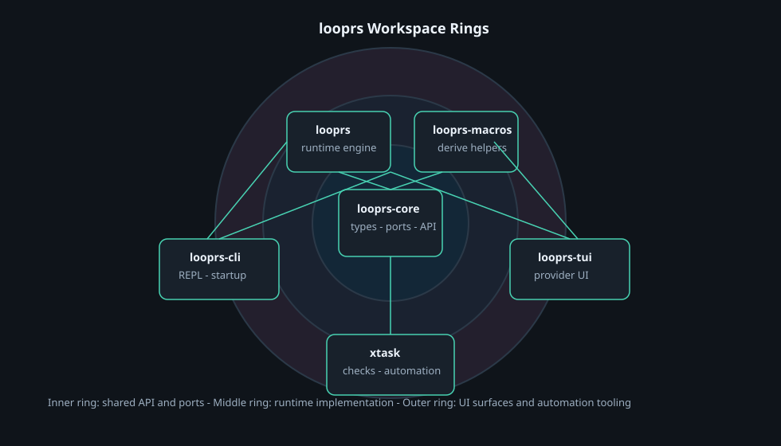
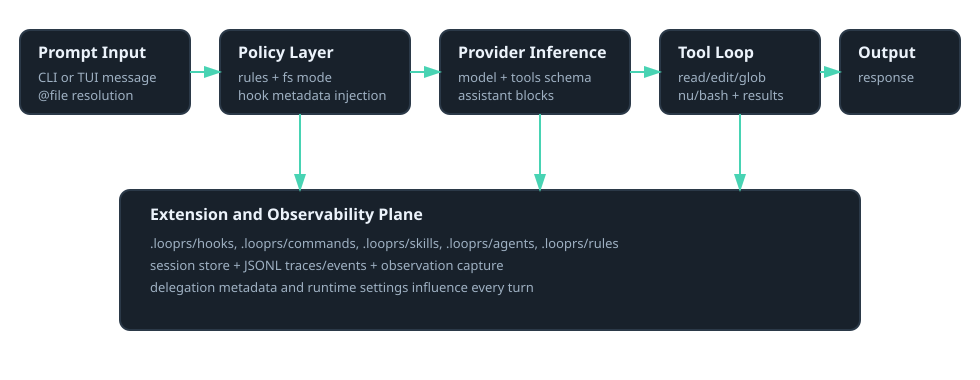

Architecture Reference
Workspace split between core types, runtime orchestration, CLI surface, and TUI interface.
Workspace ownership

looprs-core, orchestration in
looprs, and user surfaces in looprs-cli or
looprs-tui. This keeps extension and runtime concerns decoupled.
Domain and ports
crates/looprs-core defines shared types, events, and core port traits with
lightweight adapters.
Runtime engine
crates/looprs hosts the agent loop, providers, tool execution, hooks,
skills, rules, and observability.
Operator interface
crates/looprs-cli handles args, REPL, command dispatch, provider selection,
and startup plumbing.
Interactive UI
crates/looprs-tui provides the provider chooser and terminal chat client
over the same runtime primitives.
Turn execution flow

| Stage | Key components | Outcome |
|---|---|---|
| Input | CLI/TUI, file-ref resolver | User text + optional file context |
| Policy | Rule registry, fs mode, hook preconditions | Guarded prompt and tools |
| Inference | Provider adapter + model config | Assistant blocks and tool calls |
| Execution | Tool executor, event manager, hook actions | Tool results added to transcript |
| Persistence | Session store + JSONL observability | Replayable traces and usage |
Extension loading model
Dual-source precedence
User-level assets in $HOME/.looprs/ are loaded first, then repo-level
assets in .looprs/ override on name collision.
Hot behavior, static contracts
Hooks, skills, and commands can evolve quickly while core API types stay in Rust code under typed boundaries.
Provider and tool boundaries
| Boundary | Owned by | Guarantee |
|---|---|---|
| Provider request shaping | crates/looprs/src/providers | Model-specific protocol conversion is isolated per provider. |
| Tool schema registry | crates/looprs/src/tools | Shared tool definitions are generated from one runtime source. |
| Execution controls | RuntimeSettings + metadata | Filesystem mode and delegated allowlists apply before tool execution. |
| UI rendering | looprs-cli, looprs-tui | Presentation can change without mutating orchestration behavior. |
Observability path
- Turn traces: request and response payload summaries are appended to JSONL.
- UI events: frontend-visible lifecycle markers are written separately for tooling.
- Session context: git state and todo context can be injected on session start.
- Diagnostics loop: tool failures fire
OnError; provider failures return through the caller and output ports.
Runtime excerpt
from crates/looprs/src/agent.rs
let mut tools = get_tool_definitions();
if let Some(server_url) = self.runtime.mcp_server_url.clone() {
match crate::tools::mcp_tool_definitions(&server_url).await {
Ok(remote_tools) => {
tools = Self::merge_remote_tool_definitions(tools, remote_tools);
}
Err(err) => {
self.output.warn(&format!(
"Warning: failed to discover MCP tools from {server_url}: {err}"
));
}
}
}
if let Some(allowed) = allowed_tools.as_ref() {
tools.retain(|tool| allowed.contains(tool.name.as_str()));
}